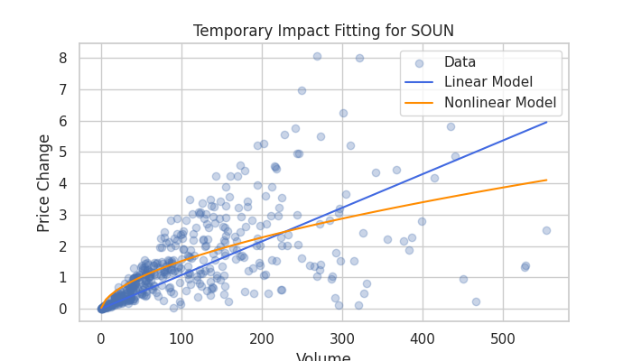

Welcome to the Blockhouse Market Impact & Optimal Allocation Project! This initiative focuses on developing robust models and algorithms to minimize trading costs by effectively managing temporary market impact during order execution.
- Core Objective: Minimize trading impact through advanced modeling and optimization of order execution across diverse stocks and time periods.
- Data Utilized: Real and synthetic order book data for three distinct stocks, analyzed at 1-minute intervals.
- Key Deliverables: An interactive analysis report, high-quality professional plots, and detailed written explanations in PDF format.
Explore the comprehensive results, underlying code, and extensive documentation provided below.
Key Visualizations & Plots

CRWV Impact Analysis
Shows the fitted power-law impact curve for CRWV, visualizing slippage vs. order volume.
FROG Impact Analysis
Demonstrates market impact modeling for FROG using advanced curve fitting.

SOUN Impact Analysis
Highlights SOUN's temporary impact function and observed data distribution.
Optimal Allocation Example
Illustrates the optimal order allocation strategy minimizing execution costs.Supplementary Documents
- Modeling the Temporary Impact Function g_t(x) (PDF) A detailed explanation of the proposed non-linear power law model for temporary market impact, including its theoretical underpinnings and estimation methodology.
- Mathematical Framework for Optimal Order Allocation (PDF) Presents the rigorous mathematical formulation and the algorithmic approach for optimizing order allocation to minimize execution costs over time.
- Modeling Temporary Impact and Optimal Order Allocation (Presentation) (PDF) A concise, high-level overview of the entire project, summarizing key findings, methodologies, and conclusions in a presentation format.